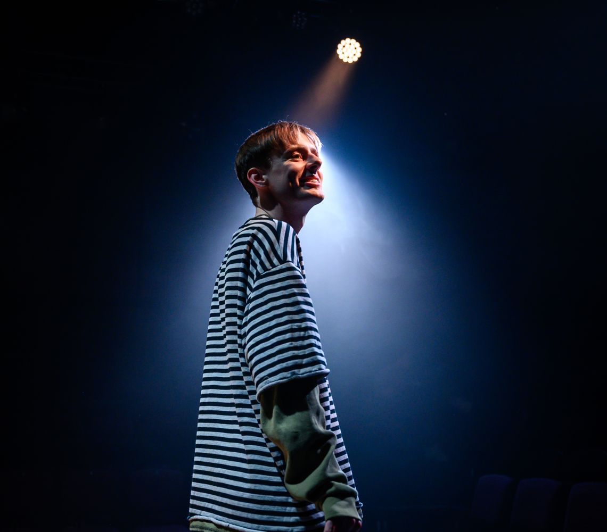
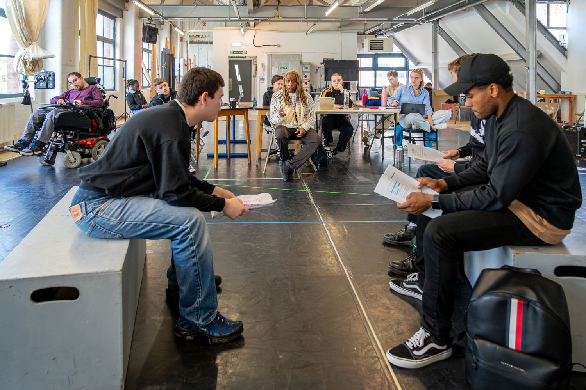

Grey Castle Productions is a new-writing company dedicated to platforming queer stories. Founded in 2023 by producer Simon Castle, the company develops and stages original new work which challenges expectations and platforms bold LGBTQIA+ talent, on and off stage.

Their debut production, 'Is the WiFi Good in Hell?' (Underbelly) was nominated for an Off West End Award, named a Playbill Pick of the Fringe, received over ten 4-and 5-star reviews and was selected for a creative roundtable with Secretary of State for Culture, Lisa Nandy. GCP also served as associate producer on the Chortle Award-nominated 'Dead Dad Show' (Soho Theatre/UK Tour) and produced 'Two Tribes', a finalist for both the Charlie Hartill and Tony Craze Awards.

Grey Castle Productions continues to collaborate with emerging queer creatives to deliver
ambitious new theatre that centres LGBTQIA+ identity and celebrates underrepresented voices.
Collaborate with us →
